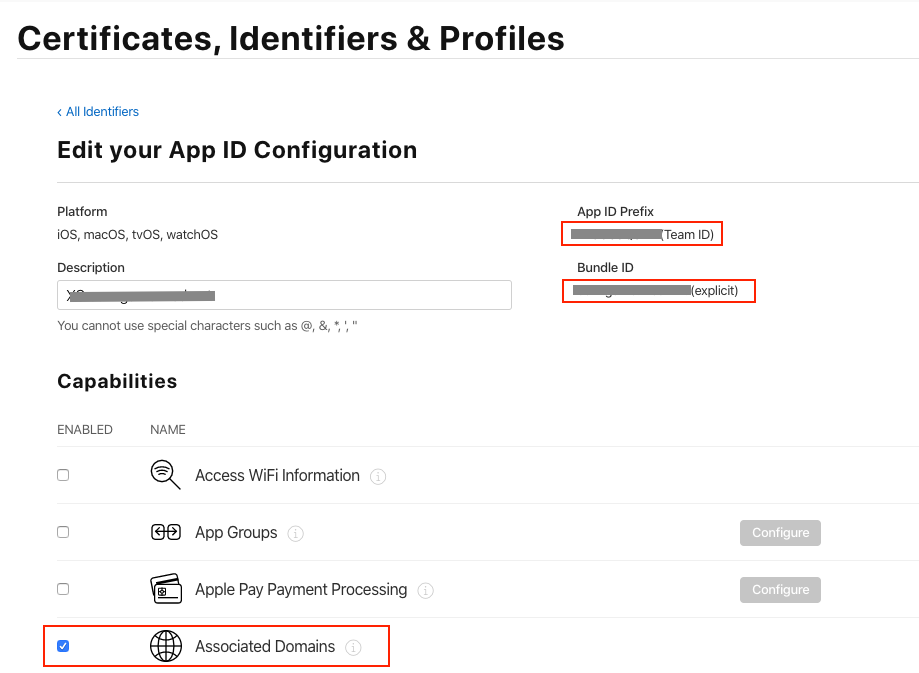
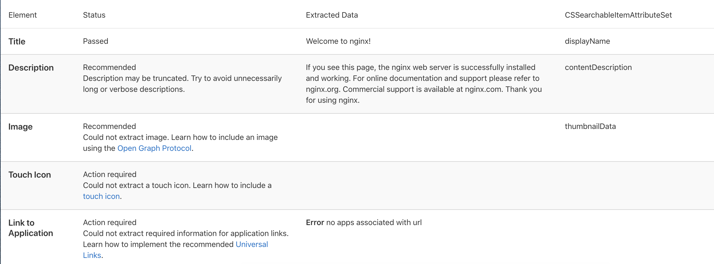
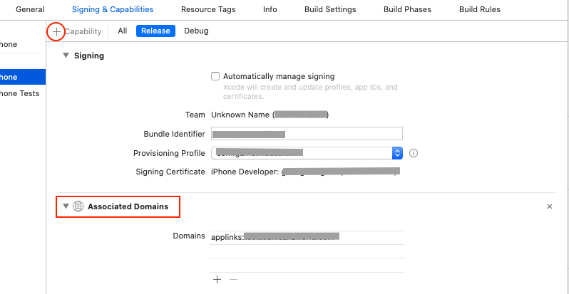

iOS Universal links 配置
通常我们在跳转到其他app时使用的是scheme url的方式，但是现在在申请微信登录或者qq登录时，都开始要求设置Universal Links。
通用链接
一、苹果开发者账号配置
1. Account -> Identifiers 打开Associated Domains开关
2. 保存App ID Prefix(Team ID)和Bundle ID后面配置文件要用到

二、网站配置
1. 创建配置文件
新建一个名字为apple-app-site-association的纯文本文件(这里就用到之前保存的两个ID)，不要有任何后缀，文件内容为
1 | { |
apps这个字段保持为空数组即可details是指定哪个页面用哪个App打开的数组，如果你有多个路径指定不同的App，按照上面的规则在details下添加对应的appID和paths即可。appID就是Team ID.Bundle IDpaths路径可以参考- 这个paths路径的更多限制规则可以参考下面
- 包含特定的网址（例如/wwdc/news/）以指定特定的链接
- 附加到特定的网址（例如/videos/wwdc/2015/）以指定网站的一部分
- 除了用于匹配任何子字符串之外，您还可以?用于匹配任何单个字符。您可以将两个通配符合并在一个路径中，例如/foo//bar/201?/mypage。
- 路径字符串的开头添加NOT指定不应作为通用链接处理的区域，例如”paths”: [ “/videos/wwdc/201?/“ , “NOT /videos/wwdc/2010/“]
比如你Team ID是ASDFG12345，Bundle ID是com.yunchang.game，只在
访问https://www.yunchang.com/app/链接时才显示顶部的用app打开，其他网站层次不显示，那么这个文件的内容就是
1 | { |
然后将这个文件上传到网站根目录，或者在根目录新建一个名字为.well-known的子目录，然后把这个文件上传到这个子目录中。注意：网站域名必须支持https
2.网站验证
上传之后，可以访问https://search.developer.apple.com/appsearch-validation-tool/，苹果专门提供的验证工具，然后将域名网址填进去，例如www.yunchang.com/，然后点击测试。

三、Xcode配置
- 打开工程配置中的Associated Domains
TARGETS -> Your TARGET -> Signing & Capabilities -> Associated Domains

2. 添加网站域名
网站域名以applinks:开头，后面是你放apple-app-site-association文件的域名，比如：applinks:www.yunchang.com
四、测试
一切配置完成之后，删除你的App（只有删除重装Apple才会从你的服务器请求你的配置文件）
在Safari中打开域名/配置的path，拿之前的例子就应该是https://www.yunchang.com/app/，然后页面往下拉，如果有有你App跳转相关信息，那么恭喜你成功了，没有也不要慌，确认配置无误的话，等一会再试试。